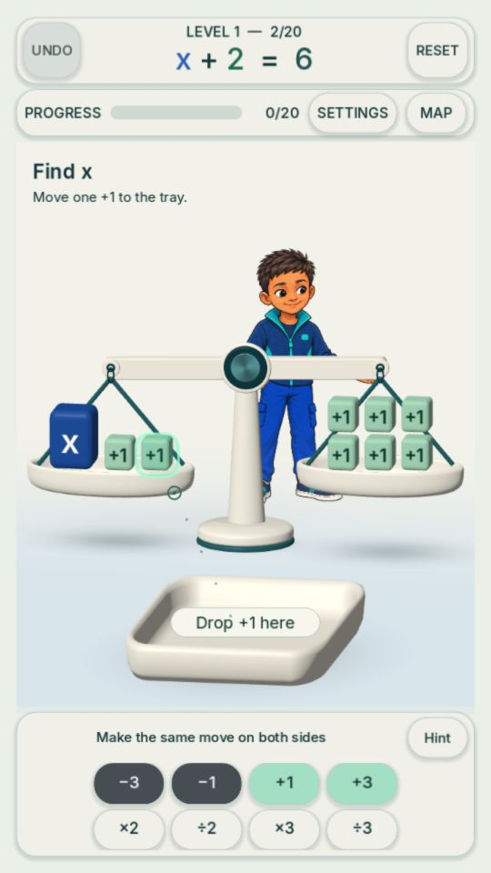

Subtract from both sides
x + 2 = 6 → x = 4
Take away two positive blocks from each pan. Four remain on the right, balancing one x on the left.
Equation Explorer
Move blocks on a balance. See why the same move belongs on both sides.
Start with subtraction and addition. Remove positive blocks, or add positives to cancel negative balloons. Keep both sides equal as you find x.
See the examples ↗Two 10-second GIFs made from captured game states. These edited walkthroughs show the starting problem, a selected action and the result, not continuous gesture recordings. The game project and lesson packs stay private.
x + 2 = 6 → x = 4

Remove two positive blocks from each side. Press Play to view the captured sequence.
The ideas behind the game
x + 2 = 6 → x = 4
Take away two positive blocks from each pan. Four remain on the right, balancing one x on the left.
x − 3 = 4 → x = 7
Add three positives to both sides. On the left, three +1 and −1 pairs cancel to zero. Seven positive blocks remain on the right.
Same change, equal value
The subtraction sequence includes a tilted scale while the second pan waits for its matching move. Both sides match again at the end.
Captured from the local October 6 game candidate. These are developer demonstrations, not learner tests. Division remains an experiment and is not the main showcase.
Help us improve it
Reply in the community discussion that brought you here. This page has no feedback form. Please leave out children’s names, schools, photos and other personal information.
STEMpathi is in development. We have used AI-assisted development and artwork. We have not established learning outcomes or published a finished curriculum.
This site contains no game runtime, lesson packs, accounts, tracking scripts or external embeds. Our hosting provider may keep standard request logs. Visitors can save the displayed GIF and screenshot.